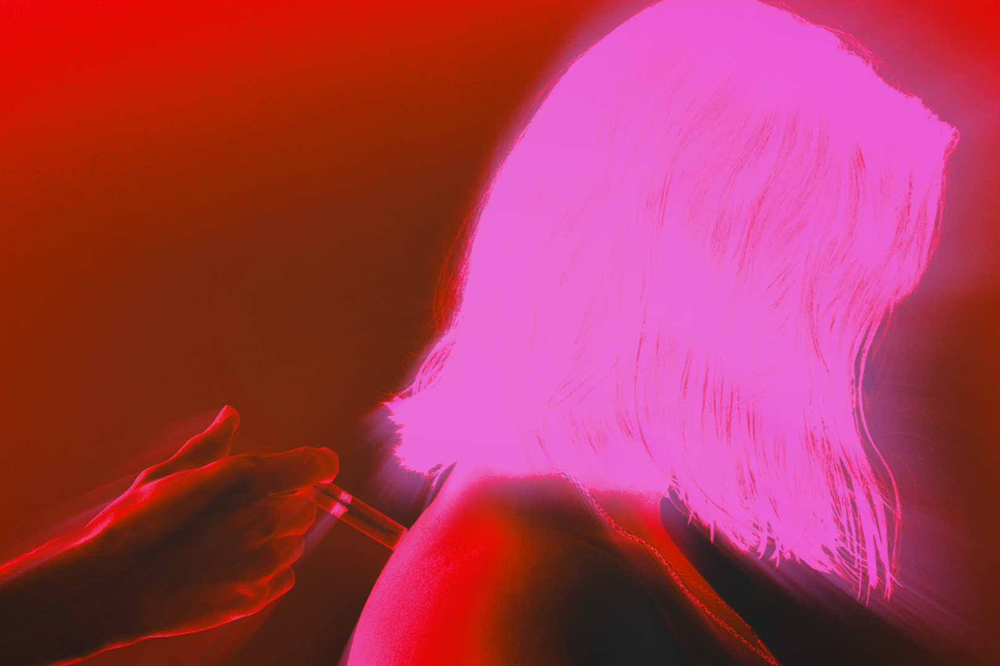

Chroma stems from a personal inspiration drawn from the theme
of scientific experiments and laboratories, within the framework of a
short fiction film. The initial desire was to create and represent an
experience with psychological and physical impacts, permeating
the entirety of the body and mind.
The color scheme was conceived in negative, that is, with inverted colors.
The video was conceived using only red and blue.
It is composed of organic and
cellular transitions and shots, thus representing the effects of injecting a
substance into the body.

Yvan Chirade, Chroma, 2024
Chroma
HD Video
16/9
Color
Stereo
00 : 01 : 12
2024
Film and editing - Yvan Chirade
Acting - Myrina Maupin and Yvan Chirade